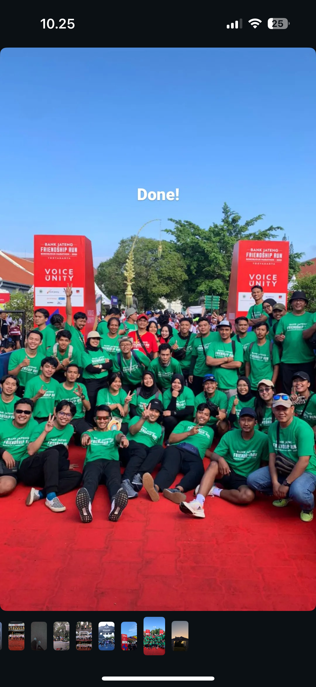
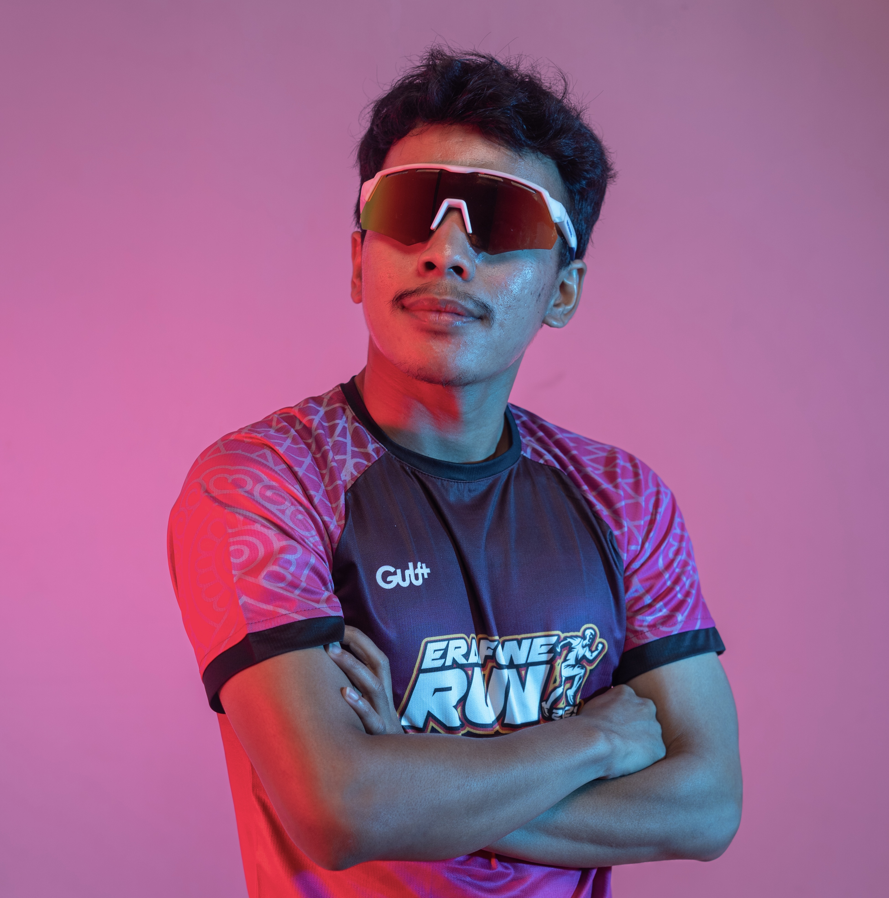
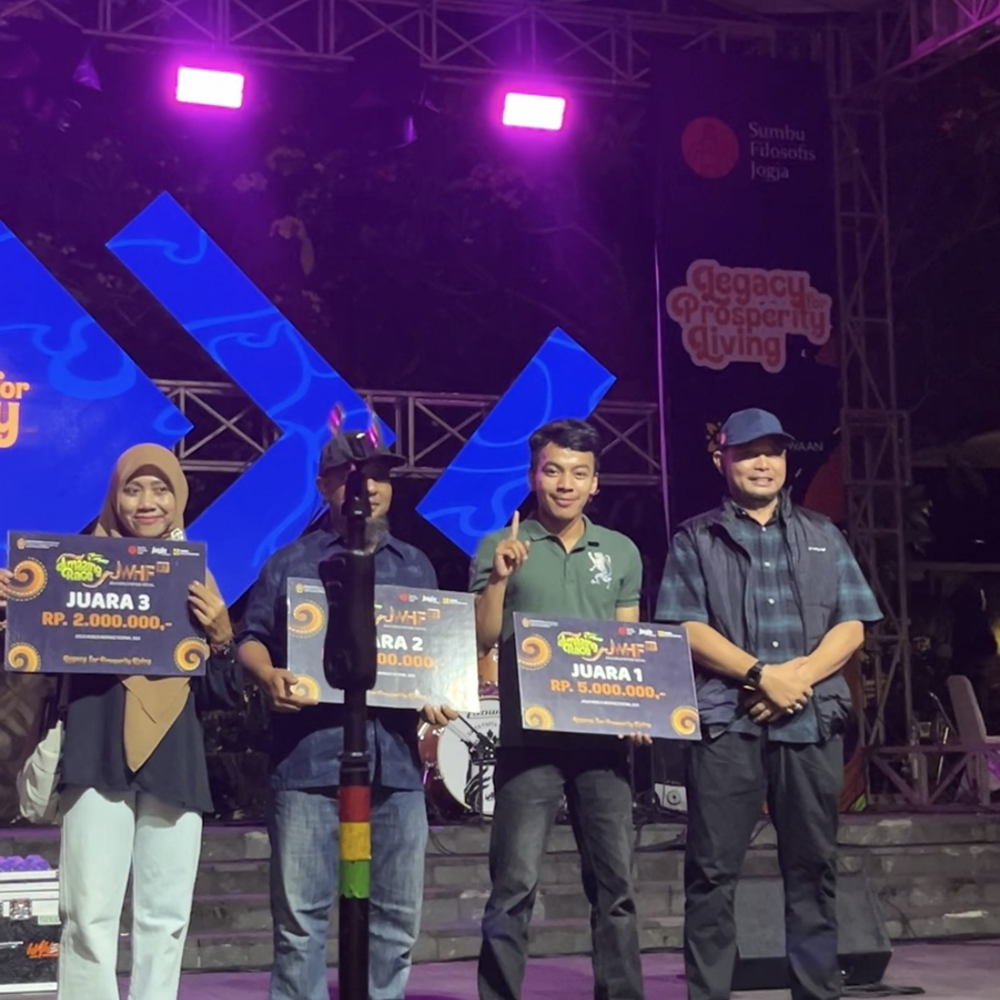

Website · Race technology
Bib Check
Alat untuk mencocokkan nomor BIB dan data peserta saat pengambilan race pack.
Lihat aktivitas Racetap.id ↗Portofolio pribadi
Saya membangun website, bekerja di balik garis finis, dan bercerita lewat konten olahraga.

Portofolio
Website · Race technology
Alat untuk mencocokkan nomor BIB dan data peserta saat pengambilan race pack.
Lihat aktivitas Racetap.id ↗Race & timing



Konten brand

Profil
Saya merintis usaha transportasi di Purworejo dan toko pakaian olahraga. Di sela kegiatan usaha, saya bertugas sebagai crew dan official event lari, menjadi relawan, serta membuat konten di Instagram dan TikTok.
Manajemen tim dan proyek, pengelolaan media sosial, produksi konten, serta strategi pemasaran.
Atletik & kompetisi

